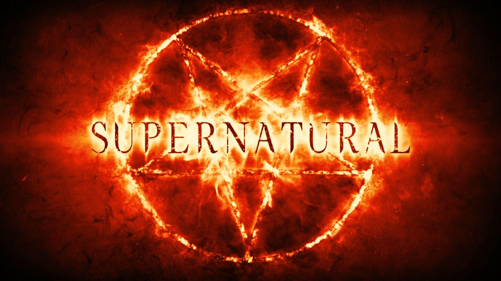

Tudo sobre Supernatural
Introdução
Supernatural (bra/prt: Sobrenatural) é uma série de televisão estadunidense de fantasia sombria e urbana criada por Eric Kripke, produzida pela Warner Bros. Television em parceria com a Wonderland Sound and Vision. Estreou em 13 de setembro de 2005 no canal The WB, e depois tornou-se parte da programação do canal The CW, sendo finalizada em 19 de novembro de 2020. A série narra a história de dois irmãos, Sam e Dean Winchester, interpretados respectivamente por Jared Padalecki e Jensen Ackles, que caçam demônios, fantasmas, monstros, vampiros e outras criaturas sobrenaturais no mundo.
Sinopse
"Supernatural" é uma série de fantasia sombria que segue os irmãos Sam e Dean Winchester enquanto eles caçam demônios, anjos e várias criaturas sobrenaturais em seu icônico Impala 67. A trama começa com a busca do pai deles por vingança pela morte da mãe, levando os irmãos a continuar o "negócio da família". Ao longo de 15 temporadas, eles enfrentam ameaças cada vez maiores, de monstros a figuras bíblicas como Lúcifer e Deus, sempre com a forte ligação entre Sam e Dean no centro da história.
Produção
"Supernatural" foi uma série de televisão americana produzida pela Warner Bros. Television em associação com a Wonderland Sound and Vision. Os produtores executivos chave incluíram **Eric Kripke** (criador da série), **Robert Singer**, **Phil Sgriccia**, **Andrew Dabb**, **Jeremy Carver** e **McG** (que esteve envolvido no início da série).
A série foi filmada principalmente em **Vancouver, Colúmbia Britânica, Canadá**, e arredores, aproveitando a paisagem diversa para representar diferentes locais dos Estados Unidos. A produção era conhecida por seus efeitos práticos e visuais que traziam as criaturas e eventos sobrenaturais à vida, além da icônica presença do **Impala 67 de Dean**.
Ao longo de suas 15 temporadas, a equipe de produção enfrentou o desafio de manter a narrativa fresca e envolvente, expandindo a mitologia da série de histórias de "monstros da semana" para arcos complexos envolvendo anjos, demônios e até mesmo Deus e A Escuridão. A longevidade da série é um testamento à dedicação da equipe e à lealdade dos fãs.
Vídeo
Assista abaixo a um vídeo relacionado a Supernatural e veja uma imagem marcante da série.
Um clipe de destaque de Supernatural.
